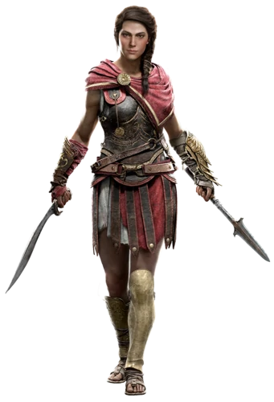

<!DOCTYPE html>
<html xmlns:mso="urn:schemas-microsoft-com:office:office" xmlns:msdt="uuid:C2F41010-65B3-11d1-A29F-00AA00C14882"></html>

<head>
    <title>Kassandra</title>
    <meta charset="utf-8">
    <style type="text/css"></style>
    <link rel="stylesheet" href="estilosobre.css" type="text/css" />
</head>

<body>
    <main> <!-- conteudo principal do site-->
        <nav> <!-- menu -->
            <ul id="menu">  <!-- tag lista não ordenada-->
                <!-- tag do item tag a com o link do wikipedia-->
                <div id="bordamenu">
                    <li><a href="index.html">Home</a></li>
                    <li><a href="https://pt.wikipedia.org/wiki/Assassin%27s_Creed_Odyssey"> Wikipedia </a></li>
                    <li><a href="sobre.html">Sobre</a></li>
                    <li><a href="">Livros</a></li>
                    <li><a href="">Outros jogos</a></li>
                </div>
            </ul>
        </nav>
        <article> <!-- artigo do blog-->
            
            <h1>Kassandra</h1>
            <p>
                Kassandra (Κασσανδρα), também conhecida como Portadora da Águia, Vento Oeste ou Guardiã, era uma mercenária espartana que lutou durante a Guerra do Peloponeso. Durante suas viagens como mercenária, Kassandra entrou em conflito com o secreto Culto do Kosmos, uma organização que pretendia controlar todo o mundo grego. Mais tarde, ela se opôs à Ordem dos Antigos, que procurava caçá-la, em parte devido à sua natureza como uma Manchada, e também por se aliar a Darius. Por sua oposição contra o Culto e a Ordem, Kassandra é considerada uma das primeiras precursoras da Irmandade dos Assassinos.
            </p>

            <p>
                Ela era a meia-irmã mais velha de Alexios e, por meio de sua mãe, Myrrine, neta do rei Leônidas de Esparta. Embora criada por seu padrasto, Nikolaos, Kassandra era a filha biológica de Pitágoras. Ela também era a mãe de Elpidios, um ancestral de Aya, um dos co-fundadores dos Ocultos.
            </p>
        </article>
</body>